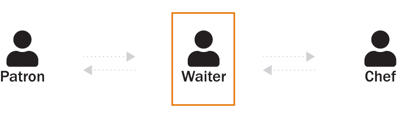

McIntire Web 3.0
Architecture & Process
Agenda
- Where We're Headed & Why
- Future Opportunities
- Process
Current State
Challenges
- Rigid structure
- Expensive and time-consuming to maintain
- Fragmented view of user interactions
Can We Do It Better?

Current State
Future State

An API-Driven Digital Ecosystem
What is an API?
The connective tissue that allows two applications to send information (structured data) back and forth
CommCal (Event Management)
Alumni Video Archive
Upcoming MSBA Info Sessions
The Breakdown
1.
Centralized content repository (headless Drupal)
Drupal CMS

API Endpoint
The Breakdown
1.
Centralized content repository (headless Drupal)
2.
Direct integrations with third-party tools
The Breakdown
1.
Centralized content repository (headless Drupal)
2.
Direct integrations with third-party tools
3.
End-to-end web analytics collection
WIIFM
(What's In It For McIntire)
- Exceptional user experience
- Streamlined content management workflows
- Reduced timelines and financial burdens
- Robust analytics and data insights
- Future-ready!
Save money, increase efficiency, drive innovation
App for Student Services
First-time user vs. user with 3 prior visits
Student Portal/Digital Signage
Conversational UIs and IoT Devices
User Journeys
CRM Integration

The Process
- Focus Groups
- Internal Stakeholder Surveys
- One-on-One Discovery Meetings
- Information Achitecture Review
What We're Asking From You
- Get excited about the possibilities
- Engage fully in the discovery process
- Data stewardship innovation